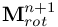
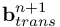
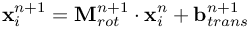

Simulate with complex geometries and complex physics
GeometryOperations
performance optimization concerning geometry operations
We list here the recent performance developments. The new algorithms run under version 3, the pervious ones under version 2, see below.
In order to judge on his own, the user is invited to check based on the COMP_TimeCheck functinality, considering the here mentioned stop watches.
Two examples have been carried out inorder to check the performance improvements:
 The picture shows the speedup of the performance for the various ORGANIZE-tasks version 3 compared to different options of version 2 for the above mentioned example 2.
The time statistics include the MPI-bisection, even though that operation is performed ever 5 timesteps, only.
The picture shows the speedup of the performance for the various ORGANIZE-tasks version 3 compared to different options of version 2 for the above mentioned example 2.
The time statistics include the MPI-bisection, even though that operation is performed ever 5 timesteps, only.
- Example 1: simple box in channel case, see Classical with 80000 MESHFREE points on 4 MPI processes. Here, free surfaces, active boundary etc. are nicely distributed among the MPI-processes.
- Example 2: sophisticated water crossing of real car geometry, 5.4 Mio MESHFREE points, 192 MPI processes. Here, free surfaces and active boundaries are absolutely NOT load-balanced, such the (see below) the performance is less optimal.
The picture shows the speedup of the performance for the various ORGANIZE-tasks version 3 compared to different options of version 2 for the above mentioned example 2.
The time statistics include the MPI-bisection, even though that operation is performed ever 5 timesteps, only.
- movement of geometry
previous standard was 2. Version 3 basically cuts down the computation time for geometry movement by one order of magnitude, as the CPU of a SharedMemory-block also share the effort for geometry movement. In version 3, we compute the rotation matrix  and the translation vector  such that the movement from the old to the new position of a geometry node is computed byORGANIZE_USER_update_boundary_particles_Version = 3 # This option allows for shared memory as well as # # performancy boost for static geometries (BE with MOVE-1 are not considered for movement)For any rigid body movement, the translation and rotation items are unique, so the matrix and vector does not have to be recomputed for any geometry point. Thus, please also apply the option %MOVE_InvokeDataCaching% in order to avoid unnecessary recomputation of and .-> stopwatch: ADMIN_TIME_INTEG.ORGANIZE.BE_Movement-> SPEEDUP (version 3 compared to version 2):
- If MOVE-1 is used, or equally MOVE($...$) = (%MOVE_none%,...), then these boundary elements are not considered for movement, thus they do not require simulation time. In version 2, even these boundary elements were processed in every time step.
- If using COMP_SharedMemoryForBE = true, then the workload for boundary element movement is distributed evenly among the shared processes
- neighbor list production
The previous standard is 2. REMARK: numbering different until version 18.11.0: 2(old) -> 1(new); 3(old) -> 2(new); 1(old) -> 3(new)GEOTREE2_EstablishCON_Version = 3 # After establishing the tree for neighbor search, MESHFREE installs the neighbor lists for each point # # The way of neighbor list installation has impact on the performance.-> stopwatches: ADMIN_TIME_INTEG.ORGANIZE.COMMUNICATION.NEIGHLIST + ADMIN_TIME_INTEG.ORGANIZE.EstablishCON-> SPEEDUP: example 1 example 2 . version 3: 1.00E-05 s/p 1.05E-05 s/p . version 2: 2.30E-05 s/p 2.51E-05 s/pAlso, it might be a good idea to study the performance on the local machine architecture. On the native Fraunhofer-cluster, for example, optimal values for the tree design were found to be The previous standard was 4 / 8 / 4-> SPEEDUP: example 1 example 2 . version 3: 0.45E-05 s/p 0.48E-05 s/p . version 2: 1.10E-05 s/p 0.97E-05 s/p
- neighbor list reduction
The previous standard was 1 or 2.NEIGHBOR_FilterMethod = 3 # after establishing the neighborlist for each point, reduce those neighbors from the list # # the rays of which pass through the boundary-> stopwatch: ADMIN_TIME_INTEG.ORGANIZE.NEIGHBORLISTREDUCTION.CC2-> SPEEDUP: example 1 example 2 . version 3: 0.30E-05 s/p 0.45E-05 s/p . version 2: 0.45E-05 s/p 0.47E-05 s/p
- neighbor list sorting
Neighborlist sorting is necessary in order to select the closest N neighbors, given by the parameter max_N_stencil .
For defining the version of neighbor list sorting, have to set the second item in the parameter GEOTREE2_EstablishCON_Version :
The previous standard was 2. REMARK: not active until version 18.11.0GEOTREE2_EstablishCON_Version = (3,3) # After the establishing the tree for neighor search, MESHFREE installs the neighbor lists for each point. # # The way of neighbor list installation has impact on the performance.-> stopwatch: ADMIN_TIME_INTEG.ORGANIZE.NEIGHBORLISTREDUCTION.ONL-> SPEEDUP: example 1 example 2 . version 3: 0.31E-05 s/p 0.17E-05 s/p . version 2: 0.75E-05 s/p 0.41E-05 s/p
- detection of free surface points
The previous standard and current default is 2.
-> stopwatch: ADMIN_TIME_INTEG.ORGANIZE.CHECK_FREE_SURFACE-> SPEEDUP: example 1 example 2 . version 3: 0.55E-05 s/p 0.14E-04 s/p . version 2: 1.48E-05 s/p 0.41E-04 s/p
- activation of boundary points
The previous standard and current default is 2.
-> stopwatch: ADMIN_TIME_INTEG.ORGANIZE.ACTIVATE_BND-> SPEEDUP: example 1 example 2 . version 3: 0.62E-05 s/p 0.11E-04 s/p . version 2: 1.37E-05 s/p 0.23E-04 s/p
- computation of distance to boundary for all points
The previous standard and current default is 2.
-> stopwatch: ADMIN_TIME_INTEG.ORGANIZE.DIST_TO_BND-> SPEEDUP: example 1 example 2 . version 3: 0.15E-05 s/p 0.12E-04 s/p . version 2: 0.75E-05 s/p 0.31E-04 s/p